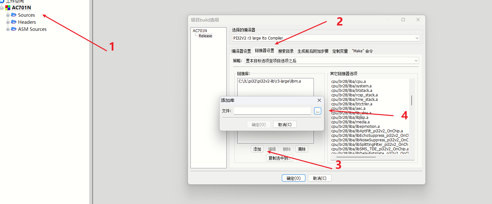

5.2. Key Usage Example
The SDK patches that currently support private data are listed below. (If you cannot find the chip model you need, or if you need support for the write function, contact Jieli.)
Chip type |
Patch |
|---|---|
AC701N |
|
AD14N |
|
AC695N_LARGE |
AC695N_LARGE patch download (click here to download) (2024/03/27) |
AC707N |
How to use the patch: go to the xxx\xxx\liba directory of the corresponding SDK (for example, cpu\br28\liba or include_lib\liba\sh54), rename the patch to secure_key.a (secure_key_lib.a for AD14N) and add it there.
Add the corresponding library file in Code::Blocks, as shown below:

5.2.1. How to use the interfaces
Note
Note: this is sample code. The write function can be used only if the area is all FF.
Return values:
typedef enum {
SK_RV_OK = 0, // 0, success return value
SK_RV_OPEN_ERROR, //1, failed to open the encrypted area; check whether the INI file is configured correctly and whether the tools have been updated
SK_RV_WRITE_ERROR, //2, write failed; check whether the CPU library is correct
SK_RV_READ_ERROR, //3, read error; invalid return
SK_RV_INIT_ERROR, //4, initialization error; invalid return
SK_PWD_MISMATCH, //5, the page key does not match the key passed in; the key in the current page header is wrong or empty
SK_PWD_CHIP_VERSION_MISMATCH, //6 chip version mismatch; the chip id does not match
SK_PWD_INVALID, //7, invalid passwd; check whether the key is correct
SK_FF_CHECK_ERROR, //8, all-FF check error: 1. dirty data that is not all FF found during initialization, 2. the data read back is all FF, 3. the area is not all FF when writing
SK_RV_WRITE_NOTSUPPORT, //9, write function not supported; check whether the library you received supports the write function
SK_PWD_VERSION_MISMATCH, //10, passwd version mismatch
SK_RV_EMPTY, //11, empty page; on the first read, check whether the page is empty
SK_RV_UNKNOWN
} SK_RETVAL_T;
Problems that may occur during debugging:
1, Calling the write interface with the read-only library reports the error SK_RV_WRITE_ERROR.
2, Writing again to a page that has already been written reports the error SK_FF_CHECK_ERROR, which means that the write was made to an area that is not all FF.
3, Reading a page with an ID that does not correspond to the page, or with a password that does not match, reports the error SK_PWD_MISMATCH.
4, Reading an empty page for the first time reports the empty error SK_RV_EMPTY.
5, The programmer reports the error "No key has been added to the firmware. Use the -key parameter in download.bat to add a KEY to the firmware." Solution: use a FW generated with the private data authorization read/write library provided after 2023/11/23.
If you do not have it, contact Jieli Technology to obtain it
///////////////////////////////////Notes on programmer recognition///////////////////////////////////////////
***This structure must be implemented in the code; otherwise the programmer reports an error.***
struct _SK_MPAD {
u8 magic_start[16];
u8 owner_passwd[16];
u8 magic_end[16];
};
Fill example: define the structure above in your own code and keep it identical. The name defined below must also be priv_pad so that the library can call it.
volatile const struct _SK_MPAD priv_pad = {
.magic_start = {0x50,0x52,0x49,0x56,0x17,0xeb,0x4a,0x47,0xae,0x47,0x8c,0x93,0xc2,0x17,0xa5,0x9e},
.owner_passwd = { 0x94, 0x44, 0x15, 0x16, 0x28, 0xae, ...... }, //Obtain the actual key from Jieli
.magic_end = {0x44,0x41,0x54,0x41,0x96,0xa3,0x41,0x97,0xa9,0x1f,0x2e,0x5e,0x18,0x3c,0xf4,0x98}
};
//////////////////////////////////////////////////////////////////////////////////////////
int secure_key_write(int page_id, const void *passwd, const void *key); //Write the key
int secure_key_read(int page_id, const void *passwd, void *key); //Read the key
void *secure_map_key_to_memory(int page_id, const void *passwd);//Get the map address
//////////////////////////////////Test demo///////////////////////////////////////////
#define PAGE_HEAD_LEN_TEST 16
#define PAGE_LEN_TEST 256
void sk_test_write()
{
int ret = 0 ;
char key[PAGE_LEN_TEST];
static char passwd[] = { 0x94, 0x44, 0x15, 0x16, 0x28, 0xae, ...... }; //Obtain the actual key from Jieli
for (int i = 0 ; i < PAGE_LEN_TEST; i++) {
key[i] = i & 0xff;
}
for (int i = 0; i < PAGE_HEAD_LEN_TEST - 1; i++) {
y_printf(">>>[test]:+++++++++++++ i = %d\n", i);
ret = secure_key_write(i, passwd, key);
if (ret) {
goto __exit;
}
}
__exit:
printf(">>>[test]:ret = %d\n", ret);
while (1) {
wdt_clear();
}
}
void sk_test_read()
{
int ret = 0 ;
char key[PAGE_LEN_TEST];
static char passwd[] = { 0x94, 0x44, 0x15, 0x16, 0x28, 0xae, ...... }; //Obtain the actual key from Jieli
for (int i = 0; i < PAGE_HEAD_LEN_TEST - 1; i++) {
y_printf(">>>[test]:+++++++++++++ i = %d\n", i);
memset(key, 0, PAGE_LEN_TEST);
ret = secure_key_read(i, passwd, key);
if (ret) {
goto __exit;
}
put_buf((const u8 *)key, PAGE_LEN_TEST);
void *logic_addr = secure_map_key_to_memory(i, passwd);
y_printf(">>>[test]:---------------------logic_addr = 0x%x\n", (u32)logic_addr);
put_buf((const u8 *)logic_addr, PAGE_LEN_TEST);
wdt_clear();
}
__exit:
printf(">>>[test]:ret = %d\n", ret);
while (1) {
wdt_clear();
}
}